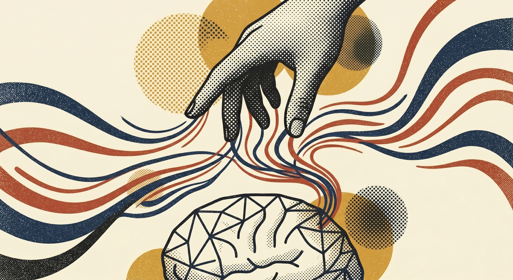

You haven't been doing it wrong. You've been using the smartest colleague you have like a calculator.
Your team isn't behind. They're using a colleague like a search bar. That's the only shift.
✕ fallacy of muscle memory Mindset overcomes the wait of "some day I'll be good at AI." There is no someday.
✕ fallacy of yesterday And the bias of "I tried it months ago — it got things wrong." AI compounds. Stay short-sighted, you lose out.
✕ fallacy of muscle memory Mindset overcomes the team wait of "some day my team will be good at AI." There is no someday.
✕ fallacy of yesterday And the team bias of "we tried it — it was wrong." AI compounds. Stay short-sighted, the team loses out.

The plateau is a question problem.
Your team's plateau is a permission problem.
Stop acting like this is software.
Stop scoping a project.
Ask what you wish. Or tell it what you hate.
Make the bigger ask visible.
You learned the prompts. You save time on email. You built a few good habits. Then nothing — same job, same outputs, same ceiling.
Here's why. You've been using a colleague like a calculator. And not just any colleague — the smartest one you've ever had access to. You're asking it to spell-check when you could be asking it to redesign your job.
Stop and look at what you're actually sitting on. The best coder you know. The best mathematician. The best logic-builder. The best project manager, MBA, accountant, lawyer. The best writer, editor, proof-reader. The best at remembering history, trivia, the names of every B-side from 1974. The best at staring at a hundred-page deck or a quarter of spreadsheet data and seeing the pattern. All of it. At once. In one window. For most people, AI is already better than each of those roles individually. Taken together — nobody beats it.
Stop planning. Stop scoping. Stop trying to figure out the best way to use it. Get Claude the ingredients — better yet, point it at the pantry — and ask it to make you a soufflé. Don't worry how it gets there. (Check the data, check the permissions; that's the only caveat.)
And one more thing nobody tells you: AI compounds. Most people use Claude like a chat — repeat the task tomorrow, same prompt, same effort. That's the trap. Don't do the work. Teach Claude to do the work. A saved skill, a Brain entry, a small repeatable recipe. What took thirty minutes today (and saved you forty-five) takes two minutes next time. Then it runs while you're in a meeting. The time savings compound like interest — but only if you stop being the chat and start being the architect.
Tomorrow morning. Not next Friday. Not next month. Tomorrow. Open Claude and instead of "help me write this email," say: "I wish I had a tool that did X. Build it." Then tell it what to fix. The plateau ends the day you change the question.
Half your team is fluent. Half isn't. The gap is widening fast — the fluent half started asking bigger questions. The other half is still treating Claude like Asana: trying to figure out the exact path from A to B.
Claude doesn't behave like Asana, or Excel, or any tool they've been handed before. Their plateau is a permission problem. They're waiting to be told they're allowed to want bigger things.
The whole shift fits in two sentences. "What do you wish for?" Or, "What do you hate?" Hand it to Claude. Stop trying to figure out how to use it. Stop scoping it like a project. Clarity comes from desire, not from process. This is easier than the tool that came before, not harder.
Remind them what they're actually sitting on. The smartest coder, mathematician, project manager, accountant, lawyer, writer, editor, and analyst they've ever had access to — at once, in one window. Most teams treat that like a fancy spell-checker. The fluent ones are asking it to redesign the job.
And the part that compounds: teach, don't do. When someone on the team solves a task with Claude, save the recipe — a skill, a prompt, a Brain note. Next time the team hits the same problem, it takes two minutes instead of thirty. The time savings stack like interest. The teams that pull ahead aren't using AI more — they're storing what they figure out so they never have to figure it out twice.
The teams that move are led by someone who said exactly that — out loud, in their actual work, every day. The team copies it within the week. The plateau ends.
Tap any card. Each one is a small analogy that explains the shift — the back has the rest of it.
One who has read everything, never sleeps, and never takes it personally when you say "that's not quite right."
turn over↻The best analogy for working with Claude isn't "using a search engine." It's closer to having a brilliant coworker who has genuinely read everything — every brief, every strategy doc, every marketing textbook, every piece of journalism published in the last 30 years — and can apply it to your specific situation in real time. Like any good partner, you still need to direct it. But you never start from scratch, never do the low-value grunt work alone. Unlike a human partner, it's available at 11pm and never gets offended by feedback.
"The more you tell it about your work, your clients, and your standards — the more it starts to feel like a real team member." turn back↺The most paralyzing moment in creative work isn't execution. It's the blank page.
turn over↻AI doesn't replace the creative leap. It obliterates the blank page. Ask Claude for 10 directions on a brief. They won't all be good. Some will be obvious. But two or three will spark something — a direction you wouldn't have found alone, or a combination of ideas that opens a whole new territory. That's the value. Not the output. The spark. The best creatives aren't the ones with the most raw talent. They're the ones who generate the most ideas — because good ideas are a numbers game.
"You're still the one with the taste. AI just makes sure you never run out of material to react to." turn back↺Right now. With no setup. The "training" people think they need is just being specific.
turn over↻One of the most common reasons people delay using Claude is the belief that there's a setup phase — that you need to "train" it before it's useful. There isn't. There's no training. There's just asking. Claude already knows your industry, your category, your craft. Not because you taught it — because it was trained on more relevant material than any person could read in a lifetime. The "training" people think they need is just good prompting — and good prompting is just being specific.
"The setup is describing your task. That's the entire setup. You already know how to do it." turn back↺Each one started as a wish, or a thing I hated. Not a plan. Not a course. Not a project brief. Just a wish handed to Claude, and a thing on my desk that hadn't existed the day before.
Imagine if you could ask Claude what idea you had eleven months ago about a brand campaign — and it remembered. Imagine asking "tell me more about how I think" and getting a real answer drawn from three years of your own conversations. That's what mine does.
privateImagine if a moodboard for a new client takes a minute, not a morning. I stopped asking "how do I make moodboards faster?" and asked "what if it just made them?" Style Sync answers in 60 seconds.
open↗Imagine if a sketch you have at breakfast is a sample part on your desk by Friday. Send Cut Send token tests for the Lantern kit. Three decades of one workflow, finally interrupted.
internalImagine if your portfolio talks back. AI chatbot per project, custom interactions instead of a Squarespace template. The site is itself an AI-native artifact built with Claude.
open↗A D2C heirloom kit, an AI story engine, and the mindset shift that made it reachable.
The opening note. Why this Substack exists, and what it isn't.
Reach out. If something landed and you want to talk it through — your work, your team, a thing you’re trying to figure out — say hi. I take a few consulting hours when they fit. Casual rate, casual scope — $200 to $1,000, depending on what we’re doing.
Take the quiz. Free. Ninety seconds. Find your fallacy and get the Curio Starter (PDF + .skill) in your inbox right after.
Go deeper. Two short docs for going further on your own.
"OK. But I need help building the actual thing."
"OK. But we need a partner to build with us, not around us."
Hand me the task. I'll sit down and build the thing.